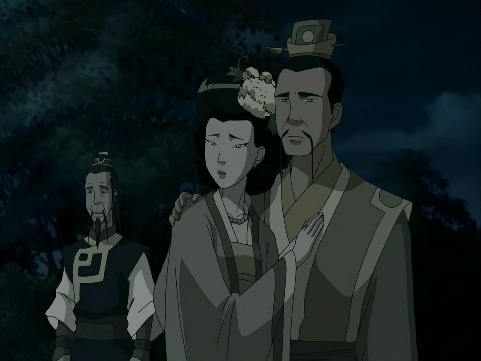

Aang needs an earthbending teacher. He and his friends visit an underground fighting tournament called Earth Rumble. There, they meet a small girl who calls herself the Blind Bandit. Her real name is Toph Beifong.
Toph is blind, but she is an excellent earthbender. She feels movements through the ground with her feet. This helps her understand where people are standing and when they are going to attack. Other fighters are bigger than Toph, but she defeats them because she is patient, skilled and confident.
Toph comes from a wealthy family. Her parents love her and want to protect her. However, they think she is weak and cannot do many things on her own. They do not know that she secretly takes part in earthbending competitions.
Aang asks Toph to become his teacher. He believes she can help him learn to stand his ground instead of running away from problems. Toph wants more independence, but leaving home is a difficult decision. She must decide what kind of life she wants.
📖 Mini dictionary
tournament — a competition with several matches movement — a change in position confident — believing in your abilities wealthy — having a lot of money independence — freedom to make your own decisions stand your ground — refuse to run away or give up
Tip: You can return to this text at any time.
2 · Multiple Choice
Suggested time: 3 minutes. Choose one answer for each question.
3 · Open Questions
Suggested time: 3 minutes. Answer in complete English sentences. Use information from the reading.
Remember: answer the question, use a fact from the text, and write a complete sentence.
Possible answers:
1. Toph feels movements through the ground with her feet.
2. Her parents think she is weak and want to protect her.
3. Aang wants Toph as his teacher because she is a skilled earthbender who can teach him to stand his ground.
4 · Descriptive Writing
Suggested time: 6 minutes.

Toph’s parents and her tutor · Use the reading and Toph’s portrait above to describe her.
Writing task: Write 5–6 sentences about Toph. Describe her appearance, personality, abilities, and family. Give one opinion with a reason.
Use these ideas (do not copy them as a list):
What does she look like? Use the picture: hair, clothes, or height.
What is she like?
What can she do?
What do her parents think about her?
Why is she interesting?
0 sentences (approx.) · 0 words
✏️ Optional sentence starters (Practice Mode)
Toph is a ... girl. She has ... . She is ... because ... . She can ... . Her parents think ... . I think ... because ... .
5 · Check Your Writing
Suggested time: 3 minutes. Read your work again and make corrections.
Your writing — edit it here
Your original text stays saved so you can compare the two versions. If you edit either version, review the checklist again. Your teacher assesses the quality of the writing.
🏆 Attempt Complete
Your multiple-choice score is automatic. Open answers and writing need teacher review.
Start a new attempt? Export your work first if you want to keep it. Your current answers will be cleared.